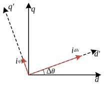

永磁同步电机高频注入法
创建于2021-4-3
该项目完成于2018-9，原创
该项目完成于2018-9，原创
永磁同步电机无传感器矢量控制算法通常要估计出电机的反电势，然后根据反电势获得电机的转子位置，这种方法在中高速时效果较好。当电机转速很低时，电机的反电势很小，估计误差占比就会很大，从而使得计算出的转子位置等信息不准确，从而使得控制性能下降，甚至无法稳定运行。为了解决这个问题，可以尝试使用基于高频注入法的无传感器矢量控制算法。
基于高频注入法的无传感器矢量控制，其原理与电机初始磁极判断的原理相同，都是根据电机dq轴电感的不同来判断转子位置。对于凸极式永磁同步电机，dq轴电感有显著不同，可以很好地使用高频注入法，而表贴式永磁同步电机的dq轴电感十分接近，需要通过注入励磁电流使磁场饱和产生“凸极”来满足高频注入法的使用条件。

高频注入法有两种常用的注入方式，一种是在静止坐标系下注入高频信号，另一种则在旋转坐标系下注入信号。下面将对在旋转坐标系下注入信号的方法进行简要说明。上图中，dq轴为电机实际的坐标轴，d'q'为控制算法使用的坐标轴，两者的夹角为Δθ。在d'轴注入交流信号idh，然后检测q'轴上相同频率的交流信号，根据q'轴上的高频信号iqh调整d'q'的角度，使iqh为零，这时候d'q'轴与dq轴重合，从而实现电机角度观测。
使用上述方法可以实现永磁同步电机的极低速运行，在零速时可以带满载稳定运行。高频注入由于注入了高频谐波，因此会产生较大的噪声，这也是高频注入法的缺点之一，解决噪音问题也是高频注入法的一个研究方向。目前阶段，高频注入法相对于基于电机反电势的无传感器矢量控制算法来说，应用场景依然相对较少。
除了上面介绍的常规方法之外，还有一种新式的算法开发中，目前理论推导已经完成，后续将进行实验验证。